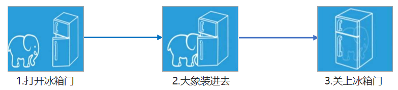
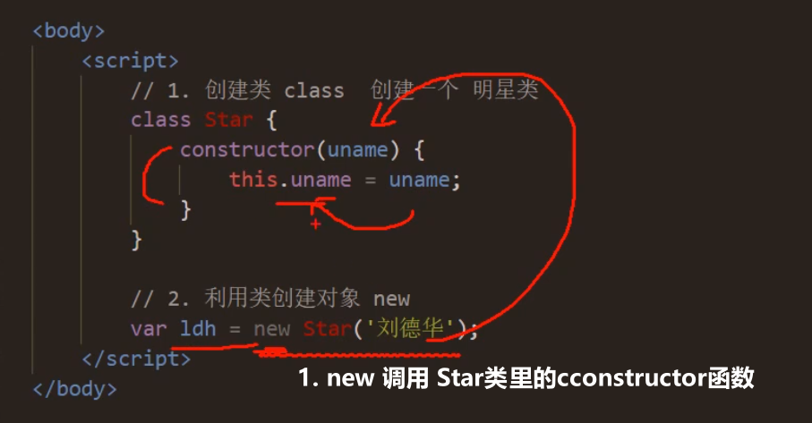
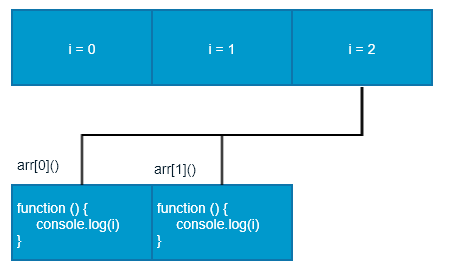
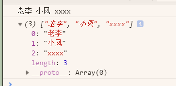
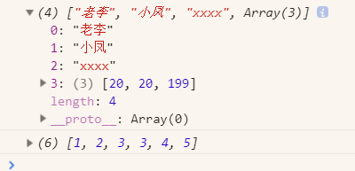
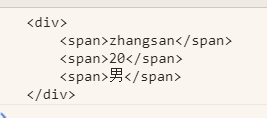
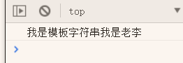

1. JavaScript 面向对象
目标：
能够说出什么是面向对象
能够说出类和对象的关系
能够使用 class 创建自定义类型
能够说出什么是继承
面向对象编程介绍
ES6 中的类和对象
类的继承
面向对象案例
1.1 面向对象编程介绍
1. 两大编程思想
- 面向过程
- 面向对象
2. 面向过程编程
面向过程编程 POP (Process-oriented programming)
1.面向过程就是分析出解决问题所需要的步骤，然后用函数把这些步骤一步一步实现，使用的时候再一个一个的依次调用就可以了。
2.举个栗子：将大象装进冰箱，面向过程做法。

3.面向过程，就是按照我们分析好了的步骤，按照步骤解决问题。
3. 面向对象编程 OOP
面向对象编程 OOP (Object Oriented Programming)
1.面向对象是把事务分解成为一个个对象，然后由对象之间分工与合作。
2.举个栗子：将大象装进冰箱，面向对象做法。先找出对象，并写出这些对象的功能：
1.大象对象
进去
2.冰箱对象
打开
关闭3.使用大象和冰箱的功能
面向对象是以对象功能来划分问题，而不是步骤。
3.在面向对象程序开发思想中，每一个对象都是功能中心，具有明确分工。
面向对象编程具有灵活、代码可复用、容易维护和开发的优点，更适合多人合作的大型软件项目。
4.面向对象的特性：
封装性
继承性
多态性
4. 面向过程和面向对象的对比
1.面向过程：
优点：性能比面向对象高，适合跟硬件联系很紧密的东西，例如单片机就采用的面向过程编程。
缺点：没有面向对象易维护、易复用、易扩展。
2.面向对象：
优点：易维护、易复用、易扩展，由于面向对象有封装、继承、多态性的特性，可以设计出低耦合[^1][^2]的系统，使系统 更加灵活、更加易于维护
缺点：性能比面向过程低
3.用面向过程的方法写出来的程序是一份蛋炒饭，而用面向对象写出来的程序是一份盖浇饭。
https://www.bilibili.com/video/BV1Kt411w7MP?p=3&spm_id_from=pageDriver
1.2 ES6 中的类和对象
1. 面向对象
1.面向对象更贴近我们的实际生活, 可以使用面向对象描述现实世界事物. 但是事物分为具体的事物和抽象的事物
抽象的(泛指的)，具体的(特指的)
2.面向对象的思维特点:
- 抽取（抽象）对象共用的属性和行为组织(封装)成一个类(模板)
- 对类进行实例化, 获取类的对象
3.面向对象编程我们考虑的是有哪些对象，按照面向对象的思维特点,不断的创建对象,使用对象,指挥对象做事情.
2. 对象
1.现实生活中：万物皆对象，对象是一个具体的事物，看得见摸得着的实物。例如，一本书、一辆汽车、一个人可以是“对象”，一个数据库、一张网页、一个与远程服务器的连接也可以是“对象”。
2.在 JavaScript 中，对象是一组无序的相关属性和方法的集合，所有的事物都是对象，例如字符串、数值、数组、函数等。
3.对象是由==属性==和==方法==组成的：
属性：事物的==特征==，在对象中用==属性==来表示（常用名词）
方法：事物的==行为==，在对象中用==方法==来表示（常用动词）
3. 类 class
1.在 ES6 中新增加了类的概念，可以使用 class 关键字声明一个类，之后以这个类来实例化对象。
2.类抽象了对象的公共部分，它泛指某一大类（class），对象特指某一个，通过类实例化一个具体的对象。
3.类抽象了对象的公共部分，它泛指某一大类（class）
- 对象特指某一个，通过类实例化一个具体的对象
4.面向对象的思维特点:
- 抽取（抽象）对象共用的属性和行为组织(封装)成一个类(模板)
- 对类进行实例化, 获取类的对象
5.面向对象的思维特点:
抽取（抽象）对象共用的属性和行为组织(封装)成一个类(模板)
对类进行实例化, 获取类的对象
4. 创建类
1.语法：
1 | class name { |
2.创建实例：
var xx = new name();
2.1 注意： 类必须使用 new 实例化对象
https://www.bilibili.com/video/BV1Kt411w7MP?p=4&spm_id_from=pageDriver
2.2 图示：

3.constructor() 方法是类的构造函数(默认方法)，用于传递参数,返回实例对象，通过 new 命令生成对象实例时，自动调用该方法。如果没有显示定义, 类内部会自动给我们创建一个constructor() 。
3.1 语法：
1 | class Person { |
3.2 创建实例：
1 | var ldh = new Person('刘德华', 18); |
4.注意：
(1) 通过class关键字创建类，类名首写字母大写；
(2) 类里面有个constructor函数,可以接受传递过来的参数,同时返回实例对象。
(3) constructor函数只要new生成实例时,就会自动调用这个函数,如果我们不写这个函数,类也会自动生成这个函数
(4) 生成实例new不能省略
(5) 最后注意语法规范，创建类类名后面不要加小括号，生成实例类名后面加小括号，构造函数不需要加function
5. 类添加方法
1.语法：
1 | class Person { |
2.创建实例：
1 | var ldh = new Person('刘德华', 18); |
注意： 方法之间不能加逗号分隔，同时方法不需要添加 function 关键字。
3.自写：
1 | <script> |
1.3 类的继承
1. 继承
现实中的继承：子承父业，比如我们都继承了父亲的姓。
程序中的继承：子类可以继承父类的一些属性和方法。
1.语法：
1 | class Father{ // 父类 |
2.实例：
1 | class Father { |
2. super 关键字
1==.super 关键字==用于访问和调用对象父类上的函数。==可以调用父类的构造函数==，也可以调用父类的普通函数
2.语法：
1 | class Person { // 父类 |
3.注意: 子类在构造函数中使用super, 必须放到 this 前面 (必须先调用父类的构造方法,在使用子类构造方法)
4.个人案例：
1 | <script> |
https://www.bilibili.com/video/BV1Kt411w7MP?p=7&spm_id_from=pageDriver
A1. ES6
A1.1 简介
1. 什么是 ES6 ?
1.ES 的全称是 ECMAScript , 它是由 ECMA 国际标准化组织,制定的一项脚本语言的标准化规范。
| 年份 | 版本 |
|---|---|
| 2015年6月 | ES2015 |
| 2016年6月 | ES2016 |
| 2017年6月 | ES2017 |
| 2018年6月 | ES2018 |
| … | … |
2.ES6 实际上是一个泛指，泛指 ES2015 及后续的版本。
2. 为什么使用 ES6 ?
1.每一次标准的诞生都意味着语言的完善，功能的加强。JavaScript语言本身也有一些令人不满意的地方。
- 变量提升特性增加了程序运行时的不可预测性
- 语法过于松散，实现相同的功能，不同的人可能会写出不同的代码
A1.2 ES6新增语法
1. let
1.ES6中新增的用于声明变量的关键字。
1.1 块级有效
- let声明的变量只在所处于的块级有效
1 | if (true) { |
2.注意：使用let关键字声明的变量才具有块级作用域，使用var声明的变量不具备块级作用域特性。
1 | if(true){ |
3.一个{}就是一个块级；
4.作用：在逻辑复杂的时候，能防止内层变量覆盖外层变量；
4.1 防止循环变量变成全局变量
1 | <script> |
- 在for的外面，i的值也有；2021-4-7 17:22:14
- 如果改成let，那么外面是undefined，找不到；
1.2 不存在变量提升
1 | console.log(a); // a is not defined |
1.3 暂时性死区
1 | var tmp = 123; |
1.本来，按照平常的规律，外面var num了，里面能找到；
2.但后面let num了，那么在这个{}里面，num就是一个块级作用的变量了，与外面的 var num没关系了。
1.4 经典面试题
1.代码：
1 | var arr = []; |
2.图解？

3.经典面试题图解：此题的关键点在于变量i是全局的，函数执行时输出的都是全局作用域下的i值。
4.添加断点看懂了；
下面
arr[0]();执行的时候，i=2，不变了。这个时候还去console，就只有2了；如果只是arr[0]，估计是0，我去代码试试；
两个结果都是：
1
2
3ƒ () {
console.log(i);
}数组里面的值，或者叫元素，居然可以是一个函数。我的天；2021-4-7 18:00:07
5.如果换成let
经典面试题图解：此题的关键点在于每次循环都会产生一个块级作用域，每个块级作用域中的变量都是不同的，函数执行时输出的是自己上一级（循环产生的块级作用域）作用域下的i值.
arr[0](); arr[1]();的结果就是0和1
https://www.bilibili.com/video/BV1Kt411w7MP?p=96&spm_id_from=pageDriver
2. const
1.作用：声明常量，常量就是值（内存地址）不能变化的量。
- 具有块级作用域
1 | if (true) { |
2.声明常量时必须赋值
const PI; // Missing initializer in const declaration
3.常量赋值后，值不能修改。
1 | const PI = 3.14; |
3.1 不过复杂数据可以更改（虽然也不复杂）比如数组里面的数据
- 直接改数组是报错的；2021-4-7 19:58:36
1 | const ary = [100, 200]; |
3. let、const、var 的区别
1.使用 var 声明的变量，其作用域为该语句所在的函数内，且存在变量提升现象。
2.使用 let 声明的变量，其作用域为该语句所在的代码块内，不存在变量提升。
3.使用 const 声明的是常量，在后面出现的代码中不能再修改该常量的值。
- 复杂数据的值可以变化
| var | let | const |
|---|---|---|
| 函数级作用域 | 块级作用域 | 块级作用域 |
| 变量提升 | 不存在变量提升 | 不存在变量提升 |
| 值可更改 | 值可更改 | 值不可更改 |
4. 解构赋值
1.ES6中允许从数组中提取值，按照对应位置，对变量赋值。对象也可以实现解构。
4.1 数组解构
0.数组解构，允许我们按照一一对应的关系从数组中提起值，然后将值赋值给变量。
1.右边的[1,2,3]是数组，左边的是变量；（快速赋值用？）
- 左边写[]代表数组解构；
- 左边写{}代表对象解构
1 | let [a, b, c] = [1, 2, 3]; |
2.以上是左边变量数，等于，右边数组值的个数。
- 如果不相等呢？
如果解构不成功，变量的值为undefined。
1 | let [foo] = []; |
1 | let [a,b,c,e,d] = [1, 2, 3]; |
https://www.bilibili.com/video/BV1Kt411w7MP?p=102&spm_id_from=pageDriver
4.2 对象解构
1.对象解构允许我们使用变量的名字匹配对象的属性，匹配成功，将对象属性的值赋值给变量。
2.一个对象：let person = { name: 'zhangsan', age: 20 };
2.1 如果在之前，我们取数据是XX.
1 | person.name; |
1 | let person = { name: 'zhangsan', age: 20 }; |
3.对象解构的另一种写法
1 | let {name: myName, age: myAge} = person; // myName myAge 属于别名 |
3.1 自
1 | let person = { name: 'lijie', age: 20, sex: '女' }; |
5. 箭头函数
1.ES6中新增的定义函数的方式。
1 | () => {} |
- ()形参，{}函数体；
2.函数体中只有一句代码，且代码的执行结果就是返回值，可以省略大括号。
1 | function sum(num1, num2) { |
3.如果形参只有一个，可以省略小括号
1 | function fn (v) { |
4.箭头函数不绑定this关键字，箭头函数中的this，指向的是函数定义位置的上下文this。
- 比如下面，这个箭头函数是在fn函数里面，那么箭头函数里面的this就是fn函数里面this指向的地方；
- 而不是箭头函数自己，所谓的this的指向；
1 | const obj = { name: '张三'} |
返回的结果：是一个对象；
1 | Object |
4.1 call方法，可以改变函数内部的this指向；
4.2 上面那个，果然就叫：匿名箭头函数；
5.2 练习题
1.以下代码输出什么？
1 | var obj = { |
1.1 输出undfined。
- 为什么不是20？
- 不是说this指向是，包含它的那个谁的this指向吗？
- 这里是对象obj包含了它
- 那就是obj的this指向，这里的obj没什么特殊情况，就应该是obj的呀？
1.2 视频说：
- 对象没有作用域，所以没有this指向。
- ？？？
- 所以，这里的，箭头函数的this，是window；因为这里的箭头函数被定义到了全局作用域下
- 而window.say()，是没有的；2021-4-8 11:19:32
- 我觉得我有必要，写一个this关键字的 小结笔记；
- 2021-4-8 11:27:47
1.3 如果不是箭头函数，那么this能指向对象名；
1 | const test = { |
6. 剩余参数
1.剩余参数语法允许我们将一个不定数量的参数表示为一个数组。
1 | function sum (first, ...args) { |
1.1 在args前面加了三个点，表示剩余的参数我都接收了；
2.配合着箭头函数使用：
1 | const sum = (...args) => { |
2.1 emm，大略的说说：
forEach()是遍历函数的方法，数组为对象
item就是个形参，因为forEach()能得到数组里面的每一个值，所以这里就是每一个值。
然后是箭头函数
1
2
3
4
5
6
7
8
9item => total += item;
// 等于
(item) => {
total += item;
}
//等于
function (item) {
total += item;
}
3. 和解构配合使用
1 | let students = ['wangwu', 'zhangsan', 'lisi']; |
https://www.bilibili.com/video/BV1Kt411w7MP?p=108&spm_id_from=pageDriver
1 | let name = ['老李', "小凤", 'xxxx']; |
A1.3 ES6 的内置对象扩展
1. Array 的扩展方法
1.1 扩展运算符（展开语法）
1.扩展运算符可以将数组或者对象转为用逗号分隔的参数序列。
1 | let ary = [1, 2, 3]; |
1.1 自
1 | let name = ['老李', "小凤", 'xxxx']; |
1.2 预览：

2.扩展运算符可以应用于合并数组。
1 | // 方法一 |
2.1 自写：
1 | let name = ['老李', "小凤", 'xxxx']; |
2.2 预览：

3.将类数组或可遍历对象转换为真正的数组
1 | let oDivs = document.getElementsByTagName('div'); |
3.3 …oDivs，先把一个伪数组集合里的每一个值，分成由逗号分隔的；例如：
(div,div,div)
- 然后[]起来，变成一个数组格式，由变量保存；
1.2 构造函数方法：Array.from()
https://www.bilibili.com/video/BV1Kt411w7MP?p=112&spm_id_from=pageDriver
2021-4-8 15:31:49
1.将类数组或可遍历对象转换为真正的数组
1 | let arrayLike = { |
2.方法还可以接受第二个参数，作用类似于数组的map方法，用来对每个元素进行处理，将处理后的值放入返回的数组。
1 | let arrayLike = { |
1.3 实例方法：find()
A1.4 String 的扩展方法
1. 模板字符串
1.ES6新增的创建字符串的方式，使用反引号定义。
1 | let name = `zhangsan`; |
2.模板字符串中可以解析变量。
1 | let name = '张三'; |
- 以前啊，要用 + 号，多个 引号；
3.模板字符串中可以换行。
- 1.模板字符串里面的东西都会记录，不过是标签还是换行
1 | let result = { |
3.1 你以为span就是span？视频里说这是换行用的。。。。
3.2 然而并不是这样；

- 换行只是因为ENTER吧；
4.在模板字符串中可以调用函数。
1 | const sayHello = function () { |
https://www.bilibili.com/video/BV1Kt411w7MP?p=116&spm_id_from=pageDriver

2. 实例方法：startsWith() 和 endsWith()
startsWith()：表示参数字符串是否在原字符串的头部，返回布尔值
endsWith()：表示参数字符串是否在原字符串的尾部，返回布尔值
1 | let str = 'Hello world!'; |
X. 题注
[^2]:耦合性（英语：Coupling，dependency，或称耦合力或耦合度）是一种软件度量，是指一程序中，模块及模块之间信息或参数依赖的程度。
内聚性是一个和耦合性相对的概念，一般而言低耦合性代表高内聚性，反之亦然。耦合性和内聚性都是由提出结构化设计概念的赖瑞·康斯坦丁所提出[1]。低耦合性是结构良好程序的特性，低耦合性程序的可读性及可维护性会比较好。